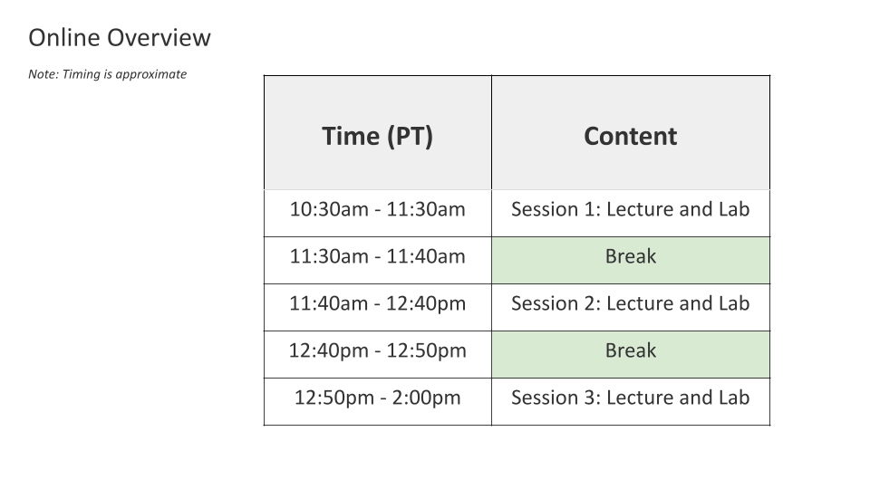

Chapter 1 Introduction 
1.1 Learning Objectives
In this chapter we will:
- Describe the audience for this guide
- Discuss what you can expect in this guide
- Introduce the Data Science for Environmental Health Short Course (DaSEH)
- Introduce the resources that make up this project
1.2 Motivation
The Data Science for Environmental Health Short Course (DaSEH), developed at the Fred Hutch Data Science Lab, is an education platform that provides open-source teaching materials using real-world examples for active experiences of introductory concepts in environmental health data analyses. The intention of this guide is to provide instructors more information about how to make the most of our resources.
1.3 Target Audience
This guide is intended for educators who are interested in using DaSEH materials for instruction.
Elements of our materials can be helpful for instructors who teach:
- High school students
- Undergraduate students
- Graduate students
- Professionals (researchers and public health practitioners)
Elements of the case studies can assist with teaching courses about the following topics:
- Environmental Health
- Data science
- Statistics
- Public health
- Programming
- Technical writing
… and more
1.4 Curriculum
This guide documents:
- The DaSEH philosophy
- The general structure of the short course
- Various entry points to using the short course materials (including our hands-on lab exercises, homework ideas and more)
- Examples of how to use the materials in the classroom
- Instructions on how to modify and adapt components of our materials for the classroom
- Guidelines for contributing to our materials or creating your own short course
1.5 DaSEH Philosophy
The DaSEH short course is an educational resource that educators can use in the classroom to teach students how to effectively derive knowledge from data in real-world challenges about environmental health.
We provide independent learners and educators with resources for environmental health data science education. Most of the examples use real data from sources that are used for actual research or public health initiatives in an effort to make the material more engaging and relevant.
Our resources are not intended to show all aspects of the research process, however they are intended to introduce beginners, demonstrate the decision making process of real data analyses, the basic challenges of analyses, to show examples of applications of data methods, and to provide context for when such methods could be applied to glean information from data. We hope to demonstrate best practices for mindful data cleaning, reproducibility, and effective data science communication.
We emphasize learning the concepts of best practices as well as how to troubleshoot and look up documentation to support continued learning, rather than memorization of small coding details. For more information on our teaching philosophy see our paper about teaching R.
All DaSEH materials are open source and free and available at our GitHub Repository. We provide transparency about where the data came from and where possible how it was produced. We also cover data method limitations and ethical considerations.
Our materials can be used for small additional assignments in a classroom setting or as the main content that educators can slowly work through with students.
We hope you find our resources useful!
1.5.1 What problem are we addressing?
Despite a growing interest in data science and environmental health on campuses, instructors do not always have time to create course content to support new courses. These resources are intended to help others support more environmental health data science education to promote more research and advancement in this important field of public health.
1.6 DaSEH Short Course Resources
![Illustration of DaSEH short course, where there are 4 main stages: 1. Online synchronous instruction with hads-on labs for week one and 2 covering topics in reproducibility, basic R, subsetting, summarizing, cleaning, manipulation visualization, statistics, and functions, 2. self-directed time for review and for finding data for code-a-thon project 3. Code-a-thon for 3 days in person coverign topics about GitHub, ethics, mapping, and appling what was learned earlier to a project. We also evaluate learner experiences and skills before the online course, after the online course, and after the code-a-thon](01-intro_files/figure-html/1vCiMPvvsdwQjiMWjf0YuSpTkG0DGXsy1614cRiFc7ns_g38d50c20f17_0_0.png)
The DaSEH Short Course has 3 main stages:
1.6.1 Stage 1: Online Instructions
In the first stage, learners participate in a synchronous online course where they watch didactic lectures on a particular topic, followed by hands-on lab activities. This last for two weeks. We cover the following topics.
Week one:
- Reproducibility
- Basic R
- Subsetting Data
- Summarizing Data
- Cleaning Data
Week two:
- Manipulation Data
- Visualization of Data
- Statistics
- Functions
Course instruction lasts for 4 hours each day with breaks.

During each session we cover one or two modules, which include didactic lectures led by an instructor and followed by hands-on lab exercises.
We recommend having two instructors and one TA. We have the instructors split up the module lectures for the following reasons:
- to reduce instruction burden
- to allow learners the opportunity to ask chat questions during the course without slowing the rest of the course
- to allow the learners to have instructors with slightly different teaching styles/explanations
For labs we provide learners with 3 options:
- A room led by one instructor who waits briefly for each question and then walks through the exercises
- A room led by one instructor who allows students time to work through all exercises and then students share their work and challenges with guidance and troubleshooting from the instructor
- A room where the teaching assistant helps those who need one-on-one support
![Overview of tasks for the personelle involved including two instructors and one teaching assistant. Each instructor teaches half of the lectures and answers chat questions while the other instructor lectures, meanwhile the TA helps look up additional resources and also helps answers chat questions. For Labs one instructor leads a group of learners by giving a brief amount of time for them to try on their own followed by walking through the steps together, the other instructor allows the learners more time to try the exercises on their own and then learners share their work and challenges with support from the instructor for added details and troubleshooting, the TA runs a lab room where learners can get one-on-one support.](01-intro_files/figure-html/1vCiMPvvsdwQjiMWjf0YuSpTkG0DGXsy1614cRiFc7ns_g38d50c20f17_0_88.png)
Topics covered in each week of the online course:
![In Week one day one includes information about the course sturcture, best practices for learning, an overview of necessary jargon, context about R, Basic R for simple calculations and assigning objects, how to navigate RStudio, how to test and save code, how to view data, Day two includes practices for reproducibility including cleaning the environment, using reports, reporting packages and versions, as well as inputing data like csv files tab delimited files and excel. Day 3 includes subsetting data, such as filtering rows and selecting columns, day 4 includes summarizing basic stats from data and grouping variables to do so, as well as information about data classes and how to transform them. The last day includes data cleaning topics, including dealing with missing data, recoding values, and making new values based on other columns](01-intro_files/figure-html/1vCiMPvvsdwQjiMWjf0YuSpTkG0DGXsy1614cRiFc7ns_g38d50c20f17_0_98.png)
![Week two day 1 includes manipulating data to reshape it or join it, as well as using a point and click option to create visualizations, the next day incldues covering the basics of a famous package called ggplot2, extensions to make interactive plots, combined plots or labeled plots, as well as best practices for visualizing data,as well as an introduction to factors and how to reorder levels, the next day includes statistcs for correlation, t-tests and regression, followed by data output to save csv and Rda files, finally we end with writing functions to make work more efficient and to apply tasks to multiple columns of a dataframe.](01-intro_files/figure-html/1vCiMPvvsdwQjiMWjf0YuSpTkG0DGXsy1614cRiFc7ns_g38d50c20f17_0_105.png)
Students have access to our website for course resources which includes lecture slides, lab exercises, cheatsheets to remind them about important functions, homework assignments, and additional resources.
1.6.2 Stage 2: Self-Directed Review and Project Planning
In this stage, learners can complete homework problems for extra practice or watch recordings of the lectures and labs from the previous week. This stage also lasts at least a week. It also gives students time to digest what they learned and catch up on other work and personal responsibilities before the code-a-thon.
Learners are also encouraged to find data and are given resources on where one can find public data, so that they can identify a research question for their project in the code-a-thon stage. Learners are provided with an example project and a project template R Markdown file.
1.6.3 Stage 3: Code-a-thon
In the final stage of the short course, learners participate in a 3 day code-a-thon, which allows them to apply what they learned to a topic of interest, get peer and instructor in person assistance, ask more extensive questions, and learn about some more advanced topics in reproducibility and data ethics.
See this code-a-thon schedule for more details.
1.7 Getting Started
DaSEH materials are designed to be beginner friendly. Users can work through our materials with no prerequisite knowledge in programming, environmental health, public health, or statistics. However, the appropriate technology, software, and a basic familiarity with R Studio is helpful. This section will detail what learners and instructors will need to be able to jump into our resources.
1.7.1 Technical Requirements
Our materials the R statistical programming language for data analysis. R is available for Windows, Mac, and Linux and can be downloaded from the The Comprehensive R Archive Network (CRAN). While there is no specific R version requirement, we recommend that instructors have all students use the same version (typically the most recent version of R).
Additional R packages are also required including:
- tidyverse
- naniar
- janitor
- esquisse
Cheatsheets detailing how to use common packages and functions are available at the RStudio website.
Please note that to install R version 3.5 and higher you will need to have a web browser and a compatible operating system. See this link for more information.
1.7.2 RStudio
To work with R, we recommend the RStudio Integrated Development Environment. RStudio includes a console, syntax-highlighting editor that supports direct code execution, as well as tools for plotting, history, debugging and workspace management. RStudio is available in open source and commercial editions and runs on the desktop (Windows, Mac, and Linux) or in a browser connected to RStudio Server. More information and program installation instruction are available at the RStudio website.
For reproducible data analyses and easy publishing of reports and presentations, we recommend using RMarkdown. More information about RMarkdown is also available at the RStudio website.
1.7.3 GitHub
DaSEH is hosted on GitHub. GitHub is a website and cloud service that enables developers to store, manage, and track changes to their code. DaSEH uses GitHub for both development and distribution purposes. Users have complete access to all materials through our DaSEH GitHub repository. The repository contains all the materials needed for the case study.
This includes the slide files to be distributed to learners, data used in the examples (that aren’t installed in R otherwise), cheatsheets to remind learners of packages, homework and lab files, including both keys and raw files for learners. While experience with GitHub is not needed for users to access the materials, users can use GitHub to streamline download and modification of our resources. An introduction on how to get started with GitHub is available at Happy Git.
1.8 Website
Our website has the following pages:
- An about page explaining what the course is for: https://daseh.org/index.html
- A page that links to a form for people to apply to the course: https://docs.google.com/forms/d/e/1FAIpQLScpzjYQBuM2rpo4SMZL_H65PI6U0sR1lPDjMI-DG2MtSld-1A/viewform
- A page with information about how people can participate and what is required: https://daseh.org/logistics.html
- A schedule with all associate materials: https://daseh.org/materials_schedule.html
- Resources about where to find environmental health data: https://daseh.org/data.html
- Resources for extra learning and help: https://daseh.org/resources.html
- A help page for common issues, common errors, and how to change preferences in RStudio: https://daseh.org/help.html
1.9 Feedback
We are continually working to improve the DaSEH resources to address learner and educator needs. Feedback is essential for this goal. If you use DaSEH materials, we would love to hear from you!
1.9.1 Survey
Please consider participating in our user experience survey.
avocado need to update for our own survey!
We appreciate feedback about all aspects of the DaSEH user experience including but not limited to technical challenges, potential improvements, or new ideas on how to use the our materials in the classroom.
1.9.2 Feedback for this Guide
If you have feedback for this guide about how we can improve the content, please see here.
 All illustrations
All illustrations